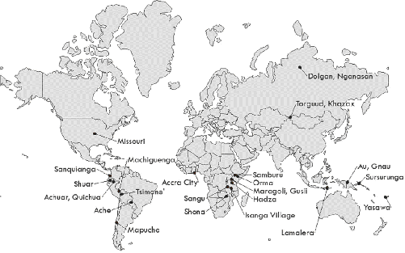
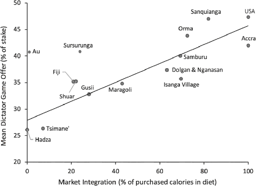
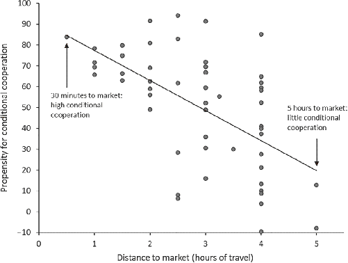
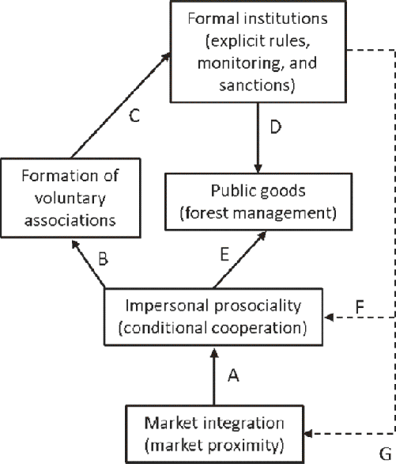
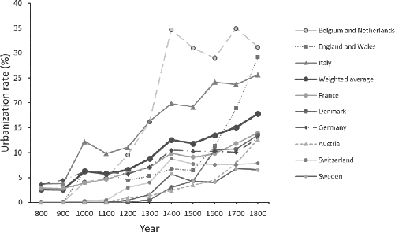
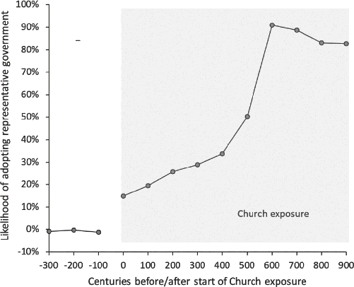
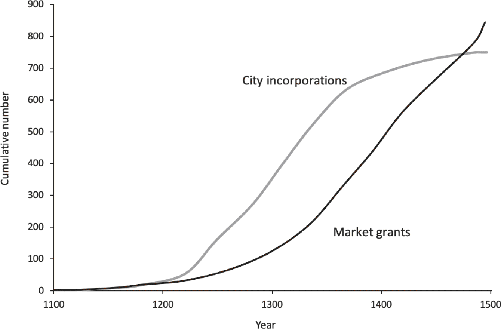

Commerce is a cure for the most destructive prejudices; for it is almost a general rule that wherever manners are gentle there is commerce; and wherever there is commerce, manners are gentle.
—Montesquieu (1749), The Spirit of the Laws1
[Commerce] is a pacific system, operating to cordialise mankind, by rendering Nations, as well as individuals, useful to each other … The invention of commerce … is the greatest approach toward universal civilization that has yet been made by any means not immediately flowing from moral principles.
—Thomas Paine (1792), Rights of Man
In the summer of 1994, I spent a few months traveling by dugout canoe among various remote Matsigenka communities while conducting anthropological fieldwork on how markets shape farming practices. The Matsigenka, you may recall from Chapter 3, are highly independent slash-and-burn farmers who traditionally lived in nuclear families or small family hamlets scattered throughout a region of the Peruvian Amazon. During this first summer of research, I was repeatedly struck by how these communities, despite their small size, struggled to work together on village projects. People cooperated easily with their extended families and sometimes with nearby households, but free-riding prevailed when it came time to build village schools, fix the community’s rice processor, or even trim the common grass field. During the subsequent year, while puzzling over these observations, I learned about an experiment called the Ultimatum Game. Immediately, I planned to try it out on the Matsigenka the following summer.2
In the Ultimatum Game (UG), two individuals are anonymously paired and must divide a sum of real money—the stake—between them. Say the stake is $100. The first player—the proposer—must make an offer between zero and the full amount ($100) to the second player—the receiver. Suppose the proposer offers $10 out of the $100 to the receiver. The receiver must decide whether to accept or reject this offer. If she accepts, she gets the amount offered ($10 in this example), and the proposer gets the remainder ($90). If the receiver rejects, both players get zero. The interaction is anonymous and one-shot, meaning that the pair will never interact again and won’t learn each other’s identity.
One fun thing about economic experiments like the UG is that it’s possible to use game theory to predict what rational people would do if they only cared about maximizing their own income. This calculation provides a benchmark for what we should expect in a world of rational, self-interested individuals—it’s the Homo economicus prediction. In the UG, as long as the proposer offers more than zero, receivers face a choice between some cash if they accept, and nothing if they reject. Faced with this simple choice, income-maximizing receivers should always accept non-zero offers. Proposers, realizing the stark choice faced by receivers, should make the smallest positive offer they can. Thus, if we put $100 on the line and limit people to making offers in $10 increments, this theory predicts that proposers should offer receivers only $10 out of the $100.3
Would you accept an offer of $10? What’s the lowest offer you would accept? As a proposer, what would you offer?
In WEIRD societies, most adults over about age 25 offer half ($50). Offers of less than 40 percent ($40) are frequently rejected. The average offer is usually about 48 percent of the stake. In these populations, following standard game theory by offering $10 (10 percent) is a bad move. In fact, if you are purely selfish but recognize that others are not, you’re still stuck offering $50 (50 percent), because if you offer less you’ll probably get rejected and end up going home with nothing. Thus unlike the Homo economicus prediction, WEIRD people reveal strong inclinations for equal offers in the Ultimatum Game.4
In Amazonia, I first conducted the UG among Matsigenka while sitting on the elevated wooden porch of a small abandoned missionary house that was a stone’s throw from the Urubamba River. The stakes were 20 Peruvian soles in the local currency, which was what Matsigenka could occasionally earn by working for over two days with a logging or oil company. Most Matsigenka proposers offered 3 soles, or 15 percent of the stake, to the receiver. Several people offered 5 soles (25 percent), and a few offered 10 soles (50 percent). Overall, the mean offer was 26 percent of the 20-sole stake. All of these low offers were immediately accepted, save for one.5 I’d learned that the Matsigenka were strikingly unlike WEIRD people in the UG.
I hadn’t anticipated this result. My WEIRD intuitions had misled me to suspect that the Matsigenka would behave like people in the United States, Europe, and other industrialized societies. When I first heard about the experiment, I’d had a gut-level reaction to the idea of receiving a low offer, so I’d assumed that the Ultimatum Game was probably capturing something innate about human psychology, about our evolved motivations for fairness and our willingness to punish unfairness. However, what was most striking to me was not the statistical results but the interviews I did with the players afterward. Matsigenka receivers didn’t see proposers as obligated to “be fair” and to give half the money. Rather, they seemed almost grateful that their anonymous partner decided to give them anything (often 3 soles out of 20). They couldn’t understand why someone would reject free money. This, in part, explained why I had so much trouble teaching them the rules of the game. The idea of rejecting any free money seemed so silly that players assumed they were misunderstanding my instructions. Proposers seemed confident that their low offers would be accepted, and some seemed to see themselves as being rather generous by giving 3 or 5 soles. Within their cultural frame, these low offers felt generous.
These interviews contrasted with those I did in Los Angeles after administering an Ultimatum Game that put $160 on the line. It was a sum that was calculated to match the Matsigenka stakes. In this immense urban metropolis, people said they’d feel guilty if they gave less than half.6 They conveyed the sense that offering half was the “right” thing to do in this situation. The one person who made a low offer (25 percent) deliberated for a long time and was clearly worried about rejection.
In retrospect, having now spent a quarter of a century exploring culture and human nature, my early experimental findings seem obvious. What I was seeing in Matsigenka behavior was merely a reflection of their social norms and lifeways. As we saw in Chapter 3, Matsigenka lack institutions for solving large-scale cooperative dilemmas, establishing command and control, and scaling up their sociopolitical complexity. Instead, they’re true individualists. Their internalized motivations are calibrated to navigate the family-level institutions of their societies, so there’s no reason to expect them to make equal offers to anonymous others or strangers, or to give up free money to punish locally sensible behaviors by proposers. This is what psychological individualism looks like without the influence of potent impersonal norms, competitive markets, and prosocial religions.7
In the two decades since my initial work, our team has interviewed and administered a range of similar behavioral experiments to people from 27 diverse societies around the globe (Figure 9.1). Our populations include hunter-gatherers from Tanzania, Indonesia, and Paraguay; herders from Mongolia, Siberia, and Kenya; subsistence farmers from South America and Africa; wage laborers from Accra (Ghana) and Missouri (the United States); and slash-and-burn horticulturalists from New Guinea, Oceania, and Amazonia.
This research derives from two successive phases. Our first phase, which involved Ultimatum Games in 15 societies, tested the idea that exposure to or experience in markets might influence people’s decisions in the experiment. Our surprising result was that people from more market-integrated societies made higher (more equal) offers. Like the Matsigenka, the most remote and smallest-scale societies not only made much lower offers (with means of about 25 percent), but they also rarely rejected any offers. Thus on both the proposer and receiver sides, WEIRD people as well as those from other industrialized societies were among the furthest from the rational benchmarks predicted by economics textbooks.9

Alas, since this was the first time anyone ever tried a project like this, our study was far from perfect. For example, we assessed the relative market integration of our societies by quantifying the ethnographic intuitions of our experts during group discussions. This was a bit subjective for my taste, although our assessments turned out to be pretty accurate. To address this and other concerns, we decided to do it all again.
In this second phase, we recruited new populations, added new experiments, and developed more rigorous research protocols. To the Ultimatum Game, we added the Dictator Game and the Third-Party Punishment Game. As you’ve seen, the Dictator Game is like the Ultimatum Game except that the receiver has no opportunity to reject the proposer’s offer, so there’s no threat of getting zero due to the receiver’s reaction. In the Third-Party Punishment Game, the proposer makes an offer to a passive receiver, as in the Dictator Game. However, there’s a third-party enforcer, who is initially given a sum of money equal to half the amount that the proposer and the receiver are dividing up. This third party can pay some of his money to financially punish the proposer at three times his cost if he doesn’t like the proposer’s offer. For example, if the proposer gives $10 out of the $100 stake to the receiver, the third party can pay $10 out of his $50 allocation to take $30 away from the proposer. In this case, the proposer would go home with $60 ($100 minus $10 minus $30), the receiver with $10, and the third party with $40 ($50 minus $10). In the Homo economicus world, because the Third-Party Punishment Game is a one-shot, anonymous interaction, proposers should give nothing to receivers, and third parties should never pay to punish the proposer (what’s in it for them?).
To improve our protocols, we (1) fixed the stakes in our experiments at one day’s wage in the local economy and (2) assessed market integration by measuring the percentage of household calories that were purchased in the market as opposed to grown, hunted, gathered, or fished by the households themselves.10
Across all three of these experiments, people living in more market-integrated communities again made higher offers (closer to 50 percent of the stake). People with little or no market integration offered only about a quarter of the stake. Going from a fully subsistence-oriented population with no market integration (e.g., Hadza hunter-gatherers in Tanzania) to a fully market-integrated community increases offers by 10 to 20 percentile points. Figure 9.2 illustrates this, showing that the more market-integrated a population, as captured by the percentage of calories purchased in the market, the more people offer in the Dictator Game. This experiment is perhaps our cleanest measure of impersonal fairness, since it removes the threat of rejection or punishment. These patterns hold across all three experiments regardless of the effects of income, wealth, community size, education, and other demographic variables.11

Incidentally, of all the variables we analyzed along with market integration, there was only one other that was consistently correlated with higher offers. Can you guess what it might be?
Participants who reported adherence to a world religion, with a Big God and supernatural punishment, offered 6 to 10 percentile points more in both the Dictator Game and the Ultimatum Game. This finding is what inspired the cross-cultural research on religion discussed in Chapter 4.13
Why would individuals from more market-integrated communities reveal stronger inclinations toward impersonal fairness in these experiments?
Well-functioning impersonal markets, in which strangers freely engage in competitive exchange, demand what I call market norms. Market norms establish the standards for judging oneself and others in impersonal transactions and lead to the internalization of motivations for trust, fairness, and cooperation with strangers and anonymous others. These are the social norms usually tapped by economic games, with their salient cues of money and anonymity.14 In a world lacking intensive kin-based institutions, where people depend on well-functioning commercial markets for nearly everything, individuals succeed in part by cultivating a reputation for impartial fairness, honesty, and cooperation with acquaintances, strangers, and anonymous others because it’s these qualities that will help them attract the most customers as well as the best business partners, employees, students, and clients. Such market norms specify how to behave when you don’t have a relationship with someone or know each other’s family, friends, social status, or caste. Such norms allow people to readily engage in a wide range of mutually beneficial transactions with just about anyone.
Market norms encourage an approach orientation and a positive-sum worldview but demand a sensitivity to the intentions and actions of others. Fairness is met with fairness, trust with trust, and cooperation with cooperation, all judged according to normative standards. Violations of market norms by one’s own partners or third parties are met with a willingness to engage in costly norm enforcement. Thus market norms and the impersonal prosociality they encourage are neither unconditional nor altruistic.
Of course, markets also favor a competitive and calculating mind-set—people want to win, but they won’t get complete respect unless they win while following the norms and agreed-upon rules. The greatest respect goes to those who succeed by their own talents and hard work while still being fair, honest, and impartial. This is a peculiar standard, since it devalues family connections, personal relationships, tribal parochialism, and clan alliances, which have all been standard over much of human history. In most times and places, in-group loyalty and family honor have trumped impartial fairness.
So far, I’ve told you only about a sturdy and replicable correlation between market integration and impersonal fairness. This relationship could be due to more fair-minded people moving into more market-integrated communities. The key question is whether greater market integration actually causes greater impersonal prosociality. That is, do markets alter people’s motivations—via the internalization of market norms—so that they are more prosocial with strangers and anonymous partners?
Living on the northern slope of Ethiopia’s Bale Mountains, the Oromo engage in cattle herding, subsistence farming, and forest gathering. To assess their impersonal prosociality, the economist Devesh Rustagi administered a simple experiment in which individuals were placed into a one-shot cooperative dilemma with an anonymous partner. Participants, after receiving nearly a day’s wage in the form of 6 birr bills, could contribute any number of these bills to a “common project” with their partner. Cash contributed to the project by either partner was increased by 50 percent and then split equally between the pair. This meant that each player took home half of the total project money plus whatever they’d kept for themselves. Here, as in the Public Goods Games described earlier, pairs make the most money if both players contribute the maximum—all 6 birr, in this case. Individuals, however, make the most if they contribute nothing and free-ride on the contributions of their partner—this is what Homo economicus would do.
Each Oromo participant faced two versions of this game. First, players stated how much they’d contribute—from 0 to 6 birr—to the common project without knowing the amount contributed by their partners. Then each player also committed to how much they’d contribute to the common project for each of the possible contributions that their partner could make. In other words, players had to commit to how much they’d contribute if their partner gave 0, 1, 2, 3, 4, 5, or all 6 birr to their joint project.15
This approach allowed Devesh to assign participants to categories such as “altruist” or “free rider” and to calculate their propensity to conditionally cooperate with their partner. Altruists contributed a lot regardless of how much their partner contributed. As you might guess, altruists were rare—only about 2 percent of Devesh’s 734 participants were altruists. By contrast, free riders contributed very little to the common project and were unresponsive to higher cooperative contributions from their partners. These guys comprised about 10 percent of the population. For everyone else (88 percent), Devesh calculated how much their partners’ contributions influenced their own contributions. Participants who matched their partners’ higher contributions in lockstep got a score of 100—they were perfectly conditionally cooperative. Those whose contributions were unconnected to their partner’s contribution got a score of zero. It’s also possible to get negative scores, if you tend to give less when your partner gives more. So, this measure of people’s propensity for conditional cooperation could theoretically range from −100 to +100.
Across 53 Oromo communities, Figure 9.3 shows that individuals from more market-integrated places were much more conditionally cooperative than those from less market-integrated places. In this study, market integration was measured by how long it took to travel from one’s community to one of the four towns in the region that periodically hold “market days.” Market days provide the only opportunities for Oromo to sell and buy a wide range of goods, including local products like butter, honey, and bamboo as well as imports like razor blades, candles, and rubber boots. These events attract thousands of people from diverse communities and thus create a dizzying array of transactions. Not surprisingly, the travel time to these towns is correlated with the frequency with which people travel to buy and sell at the markets. The closest communities, with travel times of less than two hours, all had average propensities for conditional cooperation above 60. By contrast, when people had to walk for four or more hours to get to the market, the average propensity for conditional cooperation dropped to less than 20. Overall, for every hour closer to the market, people’s propensity for conditional cooperation with an anonymous partner increased by 15.
This research strongly suggests that greater market integration does indeed foster greater impersonal prosociality. Here’s why. The geographic location of Oromo clans, and thus their travel time to local markets, is determined by local customs related to patrilineal inheritance, communal ownership, and land use rights that preceded the development of these commercial centers. Because these customs effectively tie individuals to their lands, the relationship between market integration and cooperation can’t be due to prosocial Oromo moving closer to the markets. As for the towns, their locations were determined largely by geographic and military concerns that had little to do with the Oromo. Moreover, the relationship between market proximity and conditional cooperation held even after Devesh statistically accounted for the effects of a wide range of factors like wealth, inequality, community size, and literacy. The implication is that Oromo who just happened to grow up near market towns more deeply internalized market norms, which manifests in greater impersonal prosociality in these one-shot, anonymous experiments.17

Devesh’s Oromo study is particularly cool because it allows us to take the next crucial step: it demonstrates that greater impersonal prosociality—internalized market norms—can lay the psychological foundations for constructing more effective voluntary organizations based on formalized agreements and rules.
As part of a large conservation program, these Oromo communities were invited to form voluntary organizations—cooperatives—aimed at limiting deforestation by actively managing logging and grazing. Detailed analyses reveal that the stronger a community’s propensity toward conditional cooperation (as assessed in Devesh’s experiments), the more likely these communities were to form cooperative associations that created explicit rules to regulate timber extraction and pasturing. Specifically, increasing a community’s propensity for conditional cooperation by 20 on our scale raises its likelihood of forming a new cooperative association by 30 to 40 percentile points.18
Wait, maybe this was just a big show for the NGO and its representatives? Perhaps market-integrated cooperators are just savvier at extracting money from foreigners. Did forming cooperative associations actually cash out in greater long-term benefits?
It did. The forests surrounding these Oromo communities were assessed every five years to measure local deforestation rates and gauge the effectiveness of forest management. These assessments were based on objective measures, such as the circumference of trees. The data show that both the formation of cooperative associations and the local propensity for conditional cooperation promoted healthier forests. One reason why this occurred is that the stronger people’s inclinations toward conditional cooperation, the more time they spent monitoring the common forest and catching free riders who were cutting down young trees or overgrazing common pastures—that is, they engaged in more third-party norm enforcement.19
Let’s synthesize the key insights from the Oromo in Figure 9.4. This case shows that greater market integration can cause a psychological shift toward greater impersonal prosociality (arrow A). Greater impersonal prosociality (measured as conditional cooperation) fosters the formation of voluntary organizations (arrow B) that develop formal institutions, which often involve explicit rules, written agreements, and mutual monitoring (arrow C). Both these formal institutions (arrow D) and people’s motivations for impersonal prosociality (arrow E) contribute to provisioning public goods, which in this case involves forest management. The upshot is that market integration can improve the grassroots provision of public goods and the formation of voluntary associations by inculcating social norms that foster impersonal interaction.

Figure 9.4 also illustrates relationships that may exist using dashed lines. Arrow F suggests that growing up in a world with well-functioning formal institutions may nurture greater impersonal prosociality, perhaps by making the rules and standards clear and by suggesting wide agreement. Arrow G proposes that effective formal institutions can improve the functioning of markets, through regulatory agreements or rules, and thereby expand their breadth. These relationships point to a feedback loop in which our psychology coevolves with markets and effective formal institutions.
Surprised? The notion that market integration is associated with greater fairness or cooperation is jarring to many WEIRD people. Aren’t people from small-scale societies and rural villages highly prosocial, cooperative, and generous? Don’t markets make people self-centered, individualistic, calculating, and competitive?
Yes, to both questions.
To illuminate this seeming contradiction, we must distinguish interpersonal prosociality from impersonal prosociality. The kindness and generosity found in many small-scale societies and rural villages where I’ve lived and worked are rooted in intensive kin-based institutions that focus on nurturing and sustaining enduring webs of interpersonal relationships. It’s both impressive and beautiful, but this interpersonal prosociality is about relationship-specific kindness, warmth, reciprocity, and—sometimes—unconditional generosity as well as authority and deference. It’s focused on the in-group members and their networks. If you’re in the group or the network, it can feel like a long and comforting hug.
By contrast, economic experiments typically tap market norms that prescribe fair dealing and honesty with strangers or anonymous others, especially in monetary transactions. This impersonal prosociality is about fairness principles, impartiality, honesty, and conditional cooperation in situations and contexts where interpersonal connections and in-group membership are deemed unnecessary or even irrelevant. In worlds dominated by impersonal contexts, people depend on anonymous markets, insurance, courts, and other impersonal institutions instead of large relational networks and personal ties.20
Impersonal markets can thus have dual effects on our social psychology. They simultaneously reduce our interpersonal prosociality within our in-groups and increase our impersonal prosociality with acquaintances and strangers.21 The epigraphs opening this chapter exemplify the frequent observations made by European thinkers from the 12th to the 18th centuries on how commerce seemed to tame people in ways that oiled and honed the interactions among strangers—this is the famous Doux Commerce thesis developed by Enlightenment thinkers such as Adam Smith and David Hume. Later, especially after market integration became pervasive in 19th-century Europe, Karl Marx and others began to consider what fully commercialized societies had lost (that nice hug I mentioned), and how the expanding social sphere governed by market norms changed our lives and psychology. The replacement of dense networks of interpersonal relationships and socially embedded exchange with impersonal institutions has sometimes led to alienation, exploitation, and commodification.22
Thus, to explain WEIRD psychology, given the impacts of expanding markets on our motivations, we need to know the when, where, and why of impersonal exchange in Europe. Once again, a psychological observation turns into a historical question.23
As I was wandering from store to store in the tiny town of Chol-Chol, I noticed something odd. This was the beginning of my dissertation field research among the Mapuche, an indigenous population that lives in scattered farming homesteads nestled among the rolling hills of southern Chile, in the shadow of the Andes. I’d been shopping for supplies, food, and gifts for my Mapuche hosts when I realized that there were nontrivial price differences between these stores for identical goods. As a cash-strapped graduate student, I pulled out my trusty ethnographer’s notebook and started recording the prices. It wasn’t long before I’d mapped the shortest walking circuit to purchase each of the items I wanted. Nevertheless, I puzzled over how such small stores, which were so close together, could maintain different prices for the same goods. Shouldn’t competition for customers equalize the prices? This wasn’t the focus of my research, but the question continued to rattle around in my mind.
Clues to this mystery drifted in slowly over the coming months. I first noticed that town folks always seemed to shop at the same few stores. Some shopped in two or at most three different stores, but no one had optimized a shopping circuit like me. This explained how prices could remain so variable—the competition was limited. But, it also just backed up the question to why people weren’t shopping around to get the best prices. Many of these families were poor, and few seemed pressed for time. People seemed happy to chat for hours and were often asking me for rides; I was one of the few people in town with a car. In my free time, I casually inquired as to why people shopped where they did, and specifically asked people why they didn’t buy their canned tuna, plastic buckets, or Nescafé (coffee) at the cheapest places.
In retrospect, the answer was obvious. These people had grown up together in the same small town. They all knew one another. While many households were lifelong friends and relatives, other families were considered undesirable, arrogant, or just unfriendly. Beneath an amiable veneer, there were simmering jealousies and long-running grudges, sometimes going back generations. Most of the jealousy seemed linked to money, marriage, or politics. What appeared (to me) to be rather minor differences in income among families sometimes generated powerful envy on one side, and a touch of haughtiness on the other. Occasionally the grudges were political: e.g., their family is rotten because they hadn’t (or had) supported the Chilean “savior” (or dictator) Augusto Pinochet 25 years before.
The density of these interpersonal relationships constrained market competition in Chol-Chol. The locals’ decisions to purchase everything from bread to firewood couldn’t be isolated in a conceptual economic box, the way I had automatically done. Their decisions were embedded in bigger and more important enduring relationships. Of course, buying and selling did occur, but this was more interpersonal exchange than impersonal commerce.24
My experience highlights something subtle but interesting. On the one hand, interpersonal relationships facilitate exchange by providing the first and most fundamental basis for the trust required by most types of transactions. Without at least some trust, people won’t exchange much at all, for fear of being robbed, exploited, scammed, or even murdered. This means that when exchange is risky and rare, you can increase it by building more and better interpersonal relationships. However, when the web of interpersonal relations becomes too dense, market competition and impersonal commerce get strangled. Exchange still occurs, but it’s the slow, embedded kind, as in Chol-Chol.
This suggests that getting impersonal markets up and running requires two things: (1) pruning the dense interpersonal interconnections among buyers and sellers and (2) fostering market norms, which prescribe fair and impartial behavior with acquaintances, strangers, and anonymous others. If you only prune the interpersonal relationships without adding market norms, exchange will actually decline. However, if you only add market norms to a densely interwoven network of interpersonal relationships, nothing happens—interpersonal relationships will continue to dominate exchange. Impersonal markets require both weak interpersonal relationships and potent market norms.
Historically, commerce and trade have long been influenced by interpersonal relationships in opposite ways. Exchange within communities—commerce—has often been limited by excessively entangled interpersonal relationships. If your brother-in-law is one of the two accountants in town, can you really hire the other guy? By contrast, exchange between distant communities—trade—has most commonly been inhibited by a lack of any relationships among the people in each place. Let’s look at trade more closely.
WEIRD people tend to think that trade is straightforward: we have wild yams and you have fish; let’s swap some yams for some fish. Easy. But, this is misguided. Imagine trying to barter yams for fish in the hunter-gatherer world described by William Buckley in Australia. In this world, other groups were often hostile, and strangers were frequently killed on sight. To conceal their nocturnal locations, bands erected low sod fences around their campfires so they couldn’t be spotted from a distance. If I showed up at your campfire with some yams to trade, why wouldn’t you just kill me and take them? Or you might have thought we are only offering our toxic yams, which would slowly poison you and your band. Under such conditions, which were probably common over our species’ evolutionary history, it’s difficult to see how smoothly flowing trade could ever emerge.
Nevertheless, exchange did occur throughout Aboriginal Australia, as red ocher, baskets, mats, quartz, boomerangs, and much more diffused widely through many ethnolinguistic groups, sometimes traveling across the continent. How was this possible?
The key is to realize that trade occurred along chains of interpersonal relationships, threaded together in broad networks that stretched out across hundreds or even thousands of miles. Social ties were forged and reinforced by kin-based institutions that involved social norms governing such things as marriage and communal ceremonies. There were also specialized sets of norms and rituals for building and maintaining long-distance exchange relationships.25
What didn’t happen easily was impersonal trade—barter or monetary exchange among anonymous strangers. When relationships couldn’t be established, groups still sometimes managed to engage in silent trade. There are many variants of silent trade, but I’ll use the first written description of it, from Herodotus in 440 BCE, to convey the basic setup:
The Carthaginians tell us that they trade with a race of men who live in a part of Libya beyond the Pillars of Herakles. On reaching this country, they unload their goods, arrange them tidily along the beach, and then, returning to their boats, raise a smoke. Seeing the smoke, the natives come down to the beach, place on the ground a certain quantity of gold in exchange for the goods, and go off again to a distance. The Carthaginians then come ashore and take a look at the gold; and if they think it presents a fair price for their wares, they collect it and go away; if, on the other hand, it seems too little, they go back aboard and wait, and the natives come and add to the gold until they are satisfied.26
Such silent bargaining can continue back and forth, but it is usually limited. Of course, there’s always a chance that one group will simply steal everything and vanish. Without either personal connections or impersonal trust, this is what human trade looks like. There’s no credit, no delayed delivery, no returns, no guarantees, and little bargaining. Nevertheless, silent trade has been observed around the world, in a wide range of societies including those of hunter-gatherers, and deep into antiquity. The existence of both societies that engage in silent trade as well as those without any at all underlines how difficult trade is for our species in the absence of personal relationships or exchange norms.27
Historically and ethnographically, when markets for trading between groups did begin to emerge, they developed as periodic events conducted on specific days at established locations—as among the Oromo. In farming societies, markets typically developed in the buffer zones between tribal groups. Behavior in these places was governed by specific norms, which were shared by local populations and often enforced by supernatural punishment. Carrying weapons into the market arena was often taboo, and anyone engaging in violence or theft risked supernatural sanctions. Women, traveling to market to sell their excess harvest, were often accompanied by armed kinsmen for protection. Often, these escorts had to linger at the outskirts of the market arena, and only women were permitted in. Such escorts were necessary because the sacred taboo against violence and theft ended at the market’s perimeter. This meant that when merchants crossed the perimeter on their way home, they were sometimes robbed, occasionally by those with whom they’d just traded.28
With greater protection for merchants by either state institutions or private security, more impersonal exchange could develop, but this was still limited to situations in which the quality of goods or services could be easily verified, and payments could be made on the spot. This, however, makes exchanges involving credence goods challenging. Credence goods are those that buyers can’t easily assess for quality. Consider buying a steel sword, which might seem straightforward. But, did the manufacturer add carbon to the iron? If so, how much? Maybe 0.5 percent, which is crappy—or 1.2 percent, which is excellent. How about chromium, to prevent rust, and a combination of cobalt and nickel, to strengthen the blade? Given that you, a merchant in an ancient society, might have to bet your life on your blade’s carbon content and tempering, how will you figure this out? Besides the problem of credence goods, trade without trust, honesty, or fairness seriously limits credit, insurance, long-term agreements, and even large shipments (which can’t be easily checked for quality).29
In ancient and medieval societies outside of Europe, cultural evolution devised a diverse range of ways to address these challenges. We’ve already seen examples of this in the divine oaths sworn by Mediterranean and Mesopotamian traders while finalizing shipping contracts. Another common, and often complementary, approach to long-distance exchange was for a single, widely scattered clan or ethnic group to handle all aspects of moving goods through a vast trade network.30 For example, two millennia before the Common Era in Mesopotamia, powerful families governed Assur as it developed into a thriving trading city. Operating like private firms, these large extended families stretched their tentacles across the region by sending their sons and other relatives to reside for decades in the barrios set aside for foreigners in distant cities. Assur’s patriarchs ran these operations by dispatching cuneiform instructions and goods like tin, copper, and clothing via mule trains through their extensive networks. Supernatural beliefs likely played a big role as well—the city’s eponymous deity was the god of trade.31
Three millennia later, vast trade flows across far-flung regions in China were underpinned by sprawling merchant diasporas linked by clan ties, residential connections, and personal relationships. The Hui merchant guild, for example, dominated trade along the Yangtze River and beyond beginning in the 12th century. Calling it a “guild,” however, is misleading, because it wasn’t like a European guild. It was a kind of super-clan, composed of many patrilineages. Property was corporately owned by the clan or one of the lineages, and rights to use properties and partake in profits was dependent upon both descent and economic contributions. Genealogies were constructed that linked different patrilineages to a common ancestor, and these genealogies provided road maps and Rolodexes to commercial contacts and connections among Hui merchants. Bonds among Hui lineages created the trust necessary for lineages to extend each other credit and capital. Hui businesses were staffed by lineage members and their domestic servants. In this world, the degree of commercialization in different regions increased with the elaboration of kin-based ties and the strength of these lineage organizations. The clan provided public goods like charity for poor Hui, care for their elderly, and educational funds for promising Hui scholars, who could get powerful government jobs. The dominance of the Hui merchants led to the ubiquity of the expression “no Hui, no market towns.” In highly successful large-scale societies like China, cultural evolution devised a multiplicity of ways to better harness interpersonal relationships, not suppress them.32
Of course, state bureaucracies also played a role in the growth of trade. They variously policed markets, established courts, and provided accommodations for foreign merchants. In the courts, the adjudication of disagreements often occurred not between individuals—say, a buyer and a seller—but between clans, tribes, or villages. Such adjudications were frequently not about meting out impartial justice but focused on maintaining harmony and ameliorating bad feelings between clans—judges sought to manage the relationships between kin-groups.33
My point is that while many ancient and medieval societies beyond Europe had thriving markets and extensive long-distance trade, they were generally built on webs of interpersonal relationships and kin-based institutions, not on impersonal norms of exchange with broadly applicable principles of fairness and impersonal trust. Hui and Assur merchants represent impressive and sophisticated elaborations of our species’ usual approach to trade. The Europeans of medieval Christendom, however, couldn’t easily take this well-trodden path to commercialization; the Church had undercut all of the standard tools of intensive kin-based institutions that Hui and Assur patriarchs had deployed to nourish and grow their institutions and networks. Medieval Europeans did try to create family-based trading organizations, but, hampered by the Church’s MFP, their efforts were gradually outpaced by voluntary associations (e.g., merchant guilds), impersonal institutions, and market norms.34
By 900 CE, the Church had entrenched itself in several regions of western Europe (Figure 7.1), driven out most of its competitors (e.g., Norse and Roman gods), and undermined the once dominant kin-based institutions of these populations. In forging Christendom, the Church tapped people’s tribal psychology to create a unified Christian supra-identity that linked people from distant parts of Europe. This was particularly effective because the Church’s MFP, with its far-reaching incest taboos, had already largely dissolved people’s tribal affiliations and extended kin-based loyalties. Unshackled from corporate landholdings and ancestral rites, people began to voluntarily join a variety of associations. At first, these seem to have been religious organizations that provided mutual aid, social insurance, and security—replacing several crucial functions of kin-based institutions. Eventually, however, these social tectonics created the first cracks in the rural population dams, leading individuals to begin trickling into newly forming towns and cities in places like northern Italy, France, Germany, Belgium, and England. Residentially and relationally mobile, these individuals joined guilds, monasteries, confraternities, neighborhood clubs, universities, and other associations.35
Many of these cities and towns were themselves new voluntary organizations that were actively recruiting artisans, merchants, and, later, lawyers. Soon these burgeoning urban communities began to compete to recruit valuable members by offering better opportunities and more privileges. Citizenship—city membership—often exempted individuals from conscription by local rulers but still obligated them to join in the common defense. Serfs could often gain full citizenship after only one year of residence. Competition among these urban enclaves favored whatever combinations of norms, laws, rights, and administrative organizations attracted the most productive members and generated the most prosperity.36
While the urban centers of 11th-century Europe may have superficially looked like puny versions of those in China or the Islamic world, they were actually a newly emerging form of social and political organization, ultimately rooted in, and arising from, a different cultural psychology and family organization. As we’ve seen in the last two chapters, smaller families with greater residential and relational mobility would have nurtured greater psychological individualism, more analytic thinking, less devotion to tradition, stronger desires to expand one’s social network, and greater motivations for equality over relational loyalty. These urbanizing arenas thus created places for more individualistic people to begin to build new relationships and distinct ways of organizing themselves without the binding constraints of family networks, cousin obligations, and tribal loyalties.37
The initial trickle of immigrants into urban centers slowly rose to a flood, eventually creating levels of urbanization heretofore unseen in human history. Figure 9.5 plots the percentage of western Europeans living in cities or towns of over 1,000 people. In 800 CE, less than 3 percent of the population were urbanites. During the High Middle Ages, western Europe surged past China’s urbanization rate, which remained relatively constant from 1000 to 1800 CE. In the four centuries after 1200 CE, western Europe’s urbanization rate doubled, exceeding 13 percent in 1600. Of course, as Figure 9.5 illustrates, these averages conceal much regional variation. In the Netherlands and Belgium, for example, these percentages begin at essentially zero in 900, but then climb to over 30 percent by 1400 CE.38
Urbanization was accompanied by the development of administrative assemblies and town councils, with representatives from the communities’ guilds and other associations. Some became self-governing, or at least relatively independent of an array of princes, bishops, dukes, and kings. In the 9th and 10th centuries, as the Carolingian Empire was collapsing, the first sparks of this eventual blaze of self-government ignited in northern and central Italy, where groups of prominent citizens publicly swore sacred oaths in front of local bishops, who could act as guarantors of these pacts. Governing councils were formed from these groups of sworn members. This didn’t happen in southern Italy, which, as we saw in the last chapter, hadn’t experienced the MFP at this point in history.40

North of the Alps, this urban revolution can be seen in the emergence and rapid diffusion of city charters and town privileges in regions that now include Germany, France, and England. Charters or grants of privileges were initially used to affirm existing customs that had been gestating in successful communities. As in other voluntary associations of the era, membership in towns and cities generally required individuals to take oaths before God in which they pledged to aid their fellow residents and affirmed certain individual rights and obligations. Later, these charters were used in founding new towns, as rulers looked for ways to expand and secure new territories. While some interesting regional variation in these charters existed, what’s striking about them is their similarities. They usually granted citizens the right to hold markets, more secure property rights, some degree of self-governance (often involving an election), and exemptions from various tolls, tariffs, and taxes. By 1500, most cities in western Europe were at least partially self-governing. Meanwhile, in China and the Islamic world, no city had developed self-governance based on representative assemblies.41
We get an early glimpse of urbanization at work when, in 965 CE, Church records note that “a group of Jews and other traders” had set up shop in Magdeburg (Germany), along the Elbe River at the edge of the old Carolingian Empire. A decade later, the Holy Roman emperor Otto I formally granted “privileges” to this community. Gradually, Magdeburg’s approach to civil administration, the regulation of guilds, and criminal laws were forged into what became known as Magdeburg Law.
By 1038 CE, Magdeburg’s success had begun to inspire other communities to copy its laws. In the next several centuries, over 80 cities would directly and explicitly copy Magdeburg’s charter, laws, and civil institutions. Magdeburg continued to make institutional and legal adjustments, so “daughter cities” always acquired “the Law” in whatever form it took at the time of imitation. In the 13th century, a voluntary religious and military organization called the Teutonic Knights began granting Magdeburg Law to the towns and cities they conquered in Prussia and eastward. With various modifications, these daughter cities typically passed their charters, laws, and formal institutions onto other communities. For example, in Germany, the city of Halle adopted Magdeburg Law; later in the 13th century, Halle’s laws and institutions became the model for Środa (a.k.a. Neumarkt) in modern Poland. Środa subsequently passed its charter and laws onto at least 132 other communities.42
A surviving set of nine articles from the 12th century gives us a peek at what was going on in medieval Magdeburg. This legislation seems to settle some disputes surrounding various traditions or customs. Specifically, one of the articles affirms that fathers will no longer be liable for murders or assaults committed by their sons provided that six “worthy men” will testify that the father was not present during the killing or injury, or, if he was present, that he didn’t participate at all. The law also extended to other relatives.
It was apparently necessary in Magdeburg to make a law that specifically reduced the liability of families for the actions of their violent members. The law seems to mitigate—but not abolish—collective kin-based criminal liability. It appears that self-governing cities were gradually laying down new laws that isolated individuals and their intentions, by demolishing the remnants of their intensive kin-based institutions and their associated intuitions. Recall that such collective liability appeared clearly in the earliest law codes of various European tribal populations, written during the Early Middle Ages, soon after their conversion to Christianity.43
Competing with Magdeburg, other cities developed their own charters, laws, and governing institutions. For example, after receiving its initial charter in 1188, Lübeck rose to become the richest city in northern Europe by the mid-14th century, and the mother city for much of the Baltic region, with Lübeck Law diffusing to at least 43 daughter communities.44 Like Magdeburg and other mother cities, Lübeck also acted as an appeals court when legal questions arose in daughter communities.45 Creation of a region in the Baltic governed by the same merchant-friendly constitution, administrative procedures, and legal system laid the foundation for a vast trade federation, the Hanseatic League.
Elsewhere in Europe, a parallel process of urbanization was underway. London, for example, received its first charter from William the Conqueror in 1066 and then got an even better deal from Henry I in 1129. Londoners were permitted to elect their sheriffs and control their own courts. The 24 aldermen who governed the city swore an oath to manage affairs in accordance with the charter—a constitutional oath. Here, as in Magdeburg, formal laws were laying various elements of intensive kin-based institutions to rest. Land sales, for example, were partially liberated from traditional inheritance customs. Specifically, under some conditions, individuals could sell their land, thereby disinheriting their heirs. The charter also exempted citizens from paying blood money to other families (for murders) and from being compelled to settle legal challenges in trial-by-combat (honor-based morality). Citizens were also spared from a range of tolls and customs duties. As in Germany, London’s charter provided a model for other cities, including Lincoln, Northampton, and Norwich.46
Of course, emperors, earls, and dukes were not granting urban charters or privileges because they believed in elections, local sovereignty, or individual rights. Rather, there seemed to have been at least three “pulls” and one “shove.” First, rulers discovered that freer communities could generate economic prosperity through trade and commerce—they were cash cows that could improve a ruler’s finances. Second, growing population centers meant more men, and more men meant larger military forces and greater security. Now, urban charters did often exempt citizens from impressment into the local ruler’s armies (for conquest), but at least citizens were responsible for defending their own cities and towns. Third, with the lure of privileges and opportunities, rulers could charter new colonial towns that effectively extended and reinforced their territorial control. Finally, many of the emerging voluntary associations either were primarily military organizations (like the Knights Templar) or included military wings. Merchant guilds, for example, often maintained private security forces to provide protection during long-distance trade. This meant that kings and emperors lacked anything resembling a military monopoly. So, by chartering urban centers and letting them provide for their own defense, rulers found a way to expand their lands, tap new revenue streams, and augment their military power while dealing with the realities of a world increasingly dominated by voluntary associations full of individualistically-minded people.47 Of course, this would all backfire in the long run for the royals, but it did work for centuries.
The evolution of the social norms, laws, and charters of these urban communities appears to have been influenced by the two crucial forces laid out in Chapter 3: (1) psychological fit and (2) intergroup competition. Individuals were arriving in these urban centers with a proto-WEIRD psychology: they were likely more individualistic, independent, analytic, and self-focused than populations in other complex societies, while also being less devoted to tradition, authority, and conformity. These psychological differences would have shaped the new customs and laws that developed and spread within and across these communities. Greater individualism would have deepened the appeal of laws and practices that endowed individuals with rights, ownership, and responsibilities. Reduced in-group favoritism and less tribalism would have encouraged more equitable treatment of foreigners, as we saw with the laws protecting foreign merchants. Analytical thinking would have fostered the development of abstract or universal principles that could then have been used to develop specific rules, policies, or regulations. Amazingly, the first glimmers of abstract inalienable rights are even perceptible in Magdeburg Law. Analytic thinking and individualism may also have favored the universal applicability of laws to all Christians within a jurisdiction, regardless of their tribe, class, or family. These psychological changes would have influenced the standards of judicial judgments and evidence, resulting in the slow phasing out of trial-by-combat and various other magico-religious ordeals commonly used across history to resolve legal disputes.48
Alongside such psychological forces, the evolution of these urban communities over centuries was driven by intergroup competition. Migrants to medieval urban centers, as in the modern world, were likely drawn in search of prosperity, opportunity, and security. The competition among cities and towns for migrants, often shaped by the explicit emulation of the policies and charters of the most prosperous urban centers, would have gradually assembled packages of norms, laws, and formal institutions that fostered economic prosperity and stability in an increasingly individualistic and relationally mobile world. From 1250 to 1650, for example, Bruges, Antwerp, and Amsterdam competed to create business-friendly environments in order to attract foreign merchants. All other things being equal, more successful urban communities would have drawn relatively more migrants, both from the countryside and from competing urban centers. Crucially, remember that these kinds of laws and norms worked particularly well in generating prosperity because they “fit” the emerging psychological patterns of the time—not because they were universally good, moral, or effective. A proto-WEIRD psychology first nurtured, and then coevolved with, new economic and political institutions, both formal and informal.49
But how, you might wonder, am I able to link the Church’s impact on people’s social lives and psychology to the rapid growth of urban areas and the formation of participatory governments?
By combining our database on the spread of bishoprics through Europe (Chapter 7) with century-by-century data on the population size and governance of cities from 800 to 1500 CE, Jonathan Schulz asked two questions: Do cities with longer exposure to the Church due to nearby bishoprics (within 100 km [62 mi]) grow faster than less exposed cities? And are cities with longer Church exposure more likely to develop participatory or representative governments? Keeping in mind that the Church arrives in different parts of Europe at different times, a dataset like this is nice because you can compare the same city with itself through time while holding constant both longer-term trends and century-specific shocks like plagues or famines.
Just as we suspected: the longer a city was exposed to the Church, the faster it grew, and the more likely it was to develop participatory governance. In terms of prosperity and size, each additional century of Church exposure meant an additional 1,900 urbanites. After a millennium, that’s nearly 20,000 more city dwellers. For political institutions, Figure 9.6 illustrates the impact of the Church by looking at the likelihood that a European city develops some form of representative government both before and after the Church arrives. Before the Church arrives, the estimated probability of developing any form of representative government is zero—making pre-Christian Europe just like everywhere else in the world. After the Church arrives, the chances that a city adopts some form of representative government jumps to 15 percent and then increases continuously for the next six centuries, topping out at over 90 percent.51

Of course, this analysis can’t directly finger the MFP’s psychological effects. But, seen in the light of the links between the Church, intensive kinship, and psychology that we saw in the last three chapters, it becomes difficult to imagine that psychological variation didn’t play a role.
Medieval European urban communities were increasingly built around a new kind of impersonal commerce and trade, centered in part on contractual exchanges. As I noted, urban areas actively recruited skilled professionals from as far away as they could reach. Successful charters created conditions favorable to markets, and local merchant guilds evolved into town councils or other governing bodies. These bodies aimed to pass laws and regulations that energized commerce and trade while fostering success in intercity competition.52
The competition among urban centers dramatically increased the market integration in several European regions, including large swaths of England, Germany, Holland, Belgium, France, and northern Italy. For the German lands, Figure 9.7 shows the cumulative number of city incorporations and grants of market privileges from 1100 to 1500 CE. After 1200, the number of new city incorporations per decade rose from fewer than 10 to about 40 new cities per decade. These new incorporations were followed by a rising number of grants to hold markets. Such market grants had real economic effects. New buildings, for example, tended to be constructed in the years after a city or town received a market grant.53 This proliferation of urban centers and market grants (think “market days,” as among the Oromo) drove ascending rates of market integration for growing urban and peri-urban populations in medieval Europe.
By the 14th century in England, about 1,200 weekly markets were operating, and, according to the economic historian Gary Richardson, “almost everyone was in easy reach of at least one market.”54 In rural areas, most people were within a two-hour walk (4.2 miles or less) from at least one market, and 90 percent of households were within three hours of a market (6 miles or less).
Now, look back at the Oromo data in Figure 9.3. Ninety percent of 14th-century Englishfolk would have been in the upper left quadrant of this plot. This suggests most people would have been conditional cooperators with anonymous others, and, like the Oromo in the most market-integrated communities, they would have been psychologically prepared to forge voluntary associations that make and enforce explicit agreements—contracts—to provide public goods. Unlike medieval Englishfolk, however, the Oromo can’t easily move to their local towns, immerse themselves in voluntary associations, or even purchase land near town. Instead, they live enmeshed in patrilineal, polygynous clans. Land is passed from father to son, and arranged marriages build economic and political alliances among clans. As we’ve seen, life in such kin-based institutions shapes distinct psychological profiles.56

In the urban communities of medieval Europe, the success of merchants, traders, and artisans depended—in part—on their reputation for impartial honesty and fairness, and on their industriousness, patience, precision, and punctuality. These reputational systems favored the cultivation of the relevant social standards, attentional biases, and motivations that apply to impersonal transactions. I suspect these changes in both people’s psychology and society’s reputational standards are an important part of the rapidly rising availability of credit, which helped fuel the commercial revolution.57
The emerging packages of market-oriented, impersonal social norms gradually gave rise to what historians call lex mercatoria, or Merchant Law. These peculiar norms, and later laws, were strange in that they began to strip the personal relationships out of exchange. Among those in an exchange, contract, or agreement, these norms increasingly ignored differences in class, family, or tribe. Individuals were supposed to be fair, cooperative, and honest with almost anyone, but especially with fellow Christians. Gradually, the diffusion of lex mercatoria supplied the cultural framing, rules, and expectations for individuals to engage in economic exchange with anyone else, separated from all the relational ties and emotions that accompany social interactions. Sons could buy bread at the best price, even from the daughter of someone their mother hated, and strangers from distant cities could buy, sell, and extend credit to each other in mutually beneficial ways using written contracts.58 Of course, this was a slow evolutionary process that, even today, proceeds by baby steps, because certain aspects of human psychology and intensive kin-based institutions tend to push back. Long after the Middle Ages, market norms are still being further stretched to erase differences in religion, race, gender, and sexual preference that continue to influence employment opportunities, salaries, and prison sentences.
However, to understand the diffusion of market norms in medieval Europe, we need to recognize the role played by the newly forming voluntary associations, such as towns and guilds, as well as the more individualistic psychology possessed by their members. On their own, self-interested individuals could exploit the willingness of strangers to extend credit or defer payment. However, to navigate this new social world, individuals were joining guilds, confraternities, charter towns, and a variety of other organizations, as we have seen. Members who violated commercial agreements with strangers jeopardized the reputations of their organizations—who could boot them out. Since all of these organizations were competing, they had important incentives not only to socialize their members but also to enforce rules, punish violators, and make amends with the exploited. Competition among voluntary organizations favored those who most efficiently instilled lex mercatoria in their members, since punishing members or compensating victims was costly to the organization.59
The most prosperous medieval urban communities would have been those that reaffirmed, bolstered, and backed up these informal norms with effective formal institutions and laws. This process was fostered by the spread of another voluntary association, the university. In the wake of the rediscovery of the Justinian Code of Roman civil law in the 11th century, a group of foreign law students in Bologna formed a corporate group, or universitas, focused on studying and learning. Soon, universities began sprouting throughout Europe, reaching Paris and Oxford at the beginning of the 13th century. By 1500 CE, there were over 50 such universities around Christendom, all competing for students and professors. Universities trained lawyers, theologians, and other professionals in writing, logic, and oratory as well as in math, music, and astronomy. This produced a residentially mobile Latin-speaking class who were versed in both Church and civil laws.60
Historical analyses reveal that universities spurred economic growth in their hometowns and cities. The creation of university-trained scholars likely contributed to this effect. This new social class was not only literate but increasingly capable of deducing abstract principles from the mishmash of existing customs or laws and then formulating well-structured regulations and policies for their urban communities. Formal laws galvanized and further standardized existing customs related to impersonal commerce and trade.61
The early development of commercial and contract law in Europe is important because other complex societies like China didn’t substantially develop either until the 19th century, despite being more sophisticated in other forms of law and philosophy. Interestingly, Chinese clans and merchants did write lots of private contracts, and magistrates did apply laws to adjudicate disputes arising from these contracts. However, instead of applying abstract and impersonal principles based on codified rules, magistrates considered a mélange of local customs along with the interpersonal and class relationships involved, offering what amounted to nonbinding arbitration. That is, they took a more holistic and relational approach to law—because they had a different psychology.62
As we’ve seen now with religion, kinship, and markets, institutions can shape our social psychology in important ways. This has operated differently in diverse regions, with exchange-oriented social norms sometimes evolving to foster more smoothly flowing trade between occupational castes or ethno-religious groups. In South Asia, for example, some medieval ports established enduring exchange relationships between local Hindus and Muslim traders on the Indian Ocean. Centuries later, long after the disruption of Islamic trade routes by European powers, trading ports experience less interethnic violence between Hindus and Muslims than nontrading cities. It seems that trade between these groups forged enduring informal institutions, the psychological effects of which persisted long after trade ceased.63
These kinds of prosocial effects can be observed today all over the world by examining the relationship between a community’s proximity to large rivers or oceans and the attitudes of its inhabitants toward foreigners and immigrants. Large rivers and oceans have long been, and remain, the arteries for much of the world’s trade. Living near a port usually means living in an urban center where norms, practices, and beliefs have been shaped by trade and commerce more intensely than elsewhere.
This fact suggests that western Europe had a geographic edge over many parts of the world in developing trade and commerce: this region possesses an unusually large number of natural ports and navigable waterways as well as inland seas in both the north (Baltic) and the south (Mediterranean).64 Once market norms developed, they could rapidly disseminate along the waterways into the fertile grounds of ports. This geographic preparedness would have catalyzed the process of market integration that I’ve been describing.
Summarizing our progress: the breakdown of intensive kin-based institutions opened the door to urbanization and the formation of free cities and charter towns, which began developing greater self-governance. Often dominated by merchants, urban growth generated rising levels of market integration and—we can infer—higher levels of impersonal trust, fairness, and cooperation. While these psychological and social changes were occurring, people began to ponder notions of individual rights, personal freedoms, the rule of law, and the protection of private property. These new ideas just fit people’s emerging cultural psychology better than many alternatives.
Urbanizing premodern Europe was being transformed from the middle outward, up and down the social strata. The last groups to feel these enduring psychological and social shifts were (1) the most remote subsistence farmers and (2) the highest levels of the aristocracy, who continued to consolidate power for centuries through intensive forms of kinship, long after it had been extirpated from the urban middle classes.
Of course, this wasn’t a smooth and continuous transition, even in rapidly growing urban centers. One of the greatest threats to the functioning of voluntary associations was, and remains, intensive kinship. It wasn’t uncommon for new organizations, including banks and governments, to be usurped for a time by large, powerful families consolidated by arranged marriages.65 However, as noted, this is a tough road in the long run because the Church suppressed nearly all the basic tools of intensive kinship. Under these constraints, family businesses struggled to outcompete other organizational forms. At the same time, politically or economically powerful family lineages were simply more likely to die out without polygyny, customary inheritance, remarriage, and adoption. When dominant royal families did die out, urban communities were often able to re-forge their formal institutions in ways more appealing to people with a proto-WEIRD psychology.